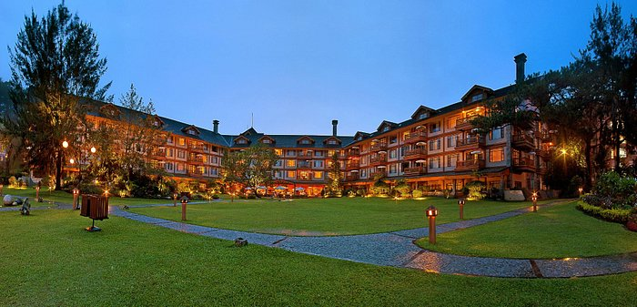

Visitor Information
📍 Location: Loakan Road, Baguio City
💰 Entrance Fee: Free
🕕 Best Time to Visit: Morning or late afternoon
📌 Highlights: Pine forest trails • Historical sites • Tree Top Adventure • Dining spots
Experience Adventure & Nature at Camp John Hay
Relax, dine, and explore Baguio’s historic pine forest sanctuary.
About Camp John Hay
Camp John Hay is a historic leisure destination known for its pine forests, hotels, nature trails, and adventure parks. Originally built as a rest and recreation facility for the U.S. military, it has become one of Baguio's most visited relaxation and adventure spots.
Map Location
This interactive map shows the exact location of Camp John Hay.
Popular Attractions & Nearby Spots
- 🌲 Picnic areas & nature trails
- ☕ The Manor & Forest Lodge hotels
- ☁️ Eco Trail & Butterfly Sanctuary
- 🧗 Treetop Adventure Park
- 🛍️ Shopping & dining areas
- 🏌️ CJH Golf Course